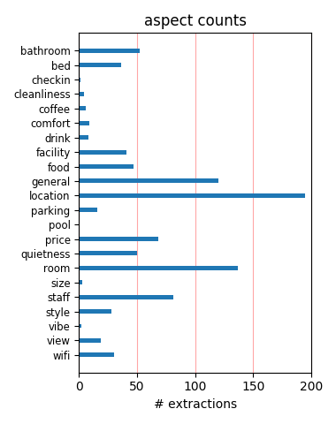
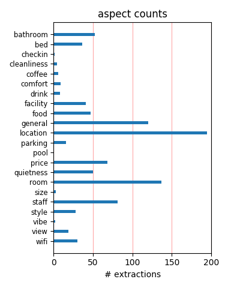

Great location and affordable This is a great hotel with a boutique feel and incredible breakfasts! We didn't find it noisy - and the location is perfect, right off Union Square. Rooms were stylish if not luxurious and the price was right. Would go back.
Great location, niceroom, great value I thought this place was a great value, and my room was very well appointed. It was clean, and the front desk staff were very helpful. I would not hesitate to recommend this hotel to friends, in fact, I already have!
Dive II Agree with other comments that the hotel is a dive: extremely run down and staff is terrible. We stayed in the Grand Terrace suite and were very dissapointed with the cleanliness and level of amenities. If this was their flagship room, I can only imagine what a standard room is like.
Great location I was attending a conference at the Westin and got a room at the Maxwell. I did not realize how close it was to the Westin. Perfect for the conference. Lower priced, Max's a good restaurant, and great location. I did not need a big room so the smaller room people write about was not a problem at all.
Sound Hotel in a Great Location Nice, sound hotel with fairly modern feel and pleasant rooms. Our queen room had a view over a/c units and a brick wall, but was quite large which for me made up for the view!Location is fantastic, right off Union Square. We booked through a SF agency whilst we were there and got a great rate.
Great location, great updated old world charm We were pleasantly surprised by the size of the room -- pretty big for an older SF hotel. Our room was nicely updated, but the building still has some of the older charm that seems to be going by the way-side every day in SF. Highly recommend Max's opera cafe, too, in the same hotel.
hated the hotel Mawell This place was horrible. The noise level was horrible. At 3:00 -4:30a.m. I heard everything on the street. This place has no instalation. The bed was to soft , no closet space , the bathroom was beyond tiny, and the total room was tiny. If I could relay my advice spend the extra $50-$8o and enjoy a normal hotel room.
great location, pleasant, rather dim and a bit scruffy excellent location very near union square, makes a change from bland modern boxes, but dim rooms and corridors bordering on the scruffy. quite stylish bathrooms but the tiles have been painted.max's diner downstairs handy but fairly basic food.free wireless internet access in the lobby.
Very nice hotel! I spent 5 nights here in October for a conference in a nearby hotel. Everything was clean, neat and quiet. The room was spacious. The price was right. Would definitely stay there again. It is so convenient to the Geary and ACT theaters, famous restaurants like Postrio, cable cars and Union Square.Definitely will stay there again next year!
Very stylish and affordable My boyfriend and I often spend the weekend in San Francisco. We've stayed in quite a few hotels, but this one was one of the best. It was about $190 for one night, and the room was spacious (the bathroom was a bit small, but that didn't bother us) and clean.And centrally located.Overall, it was very, very enjoyable, and a good value.
2 star for 4 star price The hotel was historical but that's about the only good thing I can say. The rooms were tiny, the beds were hard, no luxury, just average which is fine if the price matches. We were so dissatisfied we checked out and checked into the Marriott down the street for the same price. This hotel usually gets a 3 star rating but I think it's bordering 2 star.
No value for money - don麓t stay there Attended a wedding in the fantastic Westin next door and had to stay in this old dump!!! Only plus point: good location. Windows didn鈥檛 close properly so it was very noisy (even on level 8)! No keys for the in room safe, very old and soft mattresses, unbelievably dusty, unfriendly and arrogant staff and ridiculously too expensive 鈥?STAY AWAY!!!
Liked It! Area Excellent (close to everything)! Front Desk Recommeded To Self Park, Which Wwas veryY convienient. Multiple restaurants nearby AND OPEN 24 HRS. convenience STORE across street. We were upgraded without asking to a JR suite due to only DBL Bed rooms were smoking. Elevator WAS QUICK. Beds GOOD. NEVER ate AT THE HOTEL RESTAURANT, but it seemed nice. Internet AVAILABLE IN LOBBY
Very good value Maxwell The hotel seemed very low key when we arriv ed from Las Vegas but were delighted to be given a suite instead of our double room as you are staying 5 nights. View from windows not inspiring but room comfortable, spacious, comfortable bed and quiet. Hotel in a really excellent location for Union Square, Market Street, theatres and cable car stop. Would stay there again.
Great Location We were there for 4 nights and stayed in the suite. Believed that the suite given to us were the smallest as it is crampy for a suite.No microwave, no fridge and no drinking water. It looked old but facilities all working well.One good thing! Location is veryver good!It takes 1 min to reach the union square and the tram stop is just there!I will go back to stay the next time iam there
Nice but noisy! We recently stayed for a sleepless 4 nights at The Maxwell. Location is great, room was nice and free internet access most useful. The staff were more than helpful. The one big drawback - could not sleep at all because of the noise from the street. It is absolutely awful - so loud. Hotel backs onto night clubs and building sites. If you are looking for a good nights sleep avoid this hotel.
Maxwell has the old San Francisco charm I personally prefer the charm of the Maxwell over the institutional feel of a big, new hotel. When you step in to the lobby of the hotel, it brings you back to how San Francisco hotels should feel back in the 40s. Although, the modern amenities in the room and the lobby make the hotel really comfortable. Stay at the Maxwell if you want the small, boutique feel in a hotel.
Prime location, nice overall good bargain in a very central location. spent 3 nights here in october. service was fine/helpful, room was fine, location was excellent. close to some nice galleries, union square and the tenderloin (a little sketchy, but some great ethnic restaurants and bars, if you're into classic dives). i'd stay again, no problem. oh... not sure about parking and the attached restaurant (max's) throws a damn good breakfast.
Hmmm... I've stayed here twice now so have a good handle on the place. Generally the hotel is in a good location but the rooms are tired and shabby. The porters are good and have useful information to impart but the person I had to deal with behind the front desk was unhelpful (he couldn't even help me find a phone number when a flight was cancelled!). In conclusion, The Maxwell was ok in early 2004, 2005 finds this establishment sadly lacking.
Excellent choice, nice price This is an excellent choice for someone who is looking for a centrally located hotel, close to transportation, restaurants, and fun neighborhoods to explore. The price is fair and the rooms are clean and large. The building and rooms are older but well maintained. Despite its location in union square, it is quiet. Additionally, it is extrememly close to many rental car options and aveda bath products are an added bonus.
Great Rates with great amenities The hotel is situated a block away from union square. It's very convenient for shoppers. The hotel even offers foot massagers in the rooms. The amenities are great--they offer free wireless in the lobby and also free internet in the guest rooms. They have cd players, coffee makers, and even frette bathrobes. My only complaint was the coffee maker only makes one cup at a time.I highly recommend this hotel! A+ on my books.
I should have expected less The decor was far more interesting than a conventional hotel, but it did not warrant the higher price, especially considering mediocre service. It is the kind of place that is disappointing exactly because it aspires to be something more.The breakfast at Max's Cafe is very good but you could stop in anytime for that -- and I probably will.If you find a good deal on a room, take it. Don't expect too much and you'll be satisfied.
Pleasant @ $80 per night.... I got a great rate and after reading many of the reviews, I was a little bit hesitant but decided to give it a try. The location was excellent. The room was just fine. The bathroom was great. The people behind the counter were helpful. I was on the 7th floor. Noisy, yes. But you are in the big city and the windows are single pane. Parking, we did the self-park a half-block away for 24 hour access.Would I stay their again. Sure, at that rate.
Great location for the price Location, location, location....decent, clean place, friendly staff. spent a couple of days in San Fran with the wife and we saw all the sites and was able to come back to the Maxwell and relax. Restaurant is OK. However there are many good eats in SF so that shouldnt be a big deal.If you want a nice, clean, comfortable spot in SF to enjoy with your significant other in the heart of downtown, then the Mawell is for you.We stayed in October 2K3.
The Friendliest Staff We were overwhelmed by the welcome we received from the staff. The hotel was very quaint, and the room quite cozy. The restaurant is fabulous! The location is perfect. The only thing to remember is, being on a busy street, to use the vent fan at night. This cut out ALL of our street noise, and we slept like babies! Our friends on the otherhand, did not heed this advice, and spent the night restlessly.. I would DEFINITELY return to this hotel again and again!
Great rates, even better staff and wonderful location Booked on-line;Arrived late on a Thursday night- the valet wisked the car away and the front desk staff was wonderful. The room is cozy; the bathroom was spotless and sparkling.The room was quiet, heating and AC worked great, the bed was very comfy.Its great to be able to walk out and down a half block to pick up the cable car to the wharf. Maxwell has a wonderful location.Overall a very pleasant stay. I'd happily recommend this hotel.
Okay stay This place is not bad, but not great. The front desk was really helpful and friendly - that's about all the service you'll get. For the price, it's a good find. The hotel is charming and the room was nice. We didn't have problems hearing our neighbors but we did have a room facing the street with a jazz bar so the street noise was loud. The location is great - one block away from the cable car and taxis on the next block.If you are looking for comfort at a good price I'd recommend the Maxwell.
Good for the Money I am always skeptical of little boutique hotels in SF, but was pleasantly surprised. The location is perfect, and for the money, not bad accomodations. It is an old hotel, so the rooms are small, elevators a bit slow, but I thought it was fine for the girls getaway. Area felt safe and walking distance to the Union Square shopping and nightlife. The bar / restaurant - we walked out because the bartender spent more time chatting it up with coworkers rather than take our order - too bad as we like to drink:)
Great place for the price My husband and I stayed at the Maxwell for 5 nights ....we found this hotel to be great find. It's in a wonderful location and the staff is very accomodating. We reallly liked the homey feeling we had there. The rooms were very clean and comfortable. I didn't have any problem sleeping even with a window that faced the street with the typical city noises. We were on the go and didn't eat at the hotel so I can't comment on their food, but it did look nice and was always busy. I would recommend this place without reservation.
Under delivered -Big Time I was very disappointed with the Maxwell. It was depressing, very strange odour to the place, furnishings are old, tiny bathroom with a fan that sounded like a jumbo jet. You had to turn it on to turn the light on. The final straw was when I sat down to work found there was only one telephone line in the room and no high speed connection as was described in the Expedia room amenities. I got onto Expedia who arranged an early check out - thank goodness. It may have been OK if you were a tourist but I had a lot of work to do.
Value for money in a central location This hotel is in a fantastic location and is excellent value for money. Whilst the hotel needs redecoration, the service and cleanliness was of a good standard, the room was large and the variety of breakfast served in Max's - attached to the hotel - catered for the healthy and not so healthy. Signs in the lobby clearly stated the hotel was undergoing renovation - I doubt we will be able to afford to stay when it is a fully renovated boutique hotel. I hope they do not hike the prices up, as this is an excellent location.
Great location, small rooms I've stayed at the Maxwell 2 times before on business, but this time it was for pleasure, with my husband and our 2 young children in a double queen room; overall a nice stay. Good value -- we got an internet rate of $131 inc. self parking, but with valet parking at $30, it seems like that might have been a better way to go. We found the room a bit small, but otherwise very clean, quiet and convenient. (The biggest [free] thrill in SF was going next door and taking the Westin's exterior elevators to the top -- a must-do with kids!)
Comfortable with great location We spend two nights at The Maxwell Hotel while attending the theater play Jersey Boys. The Hotel is within a half block from the theatre and very close to many San Francisco Theaters.The Hotel staff was great, extending a warm greeting avery time we entered the Hotel lobby. They were very helpful with our requests making our stay very pleasant. Our room was a junior suite and was very comfortable. Yes this is an older hotel but seems to be very well maintained. We plan on staying at The Maxwell Hotel on our next visit to the City.
Much Better Than Expected Just returned from spending 6 nights at The Maxwell. We had a double/double delux room. It was more than sufficient - clean, large and the beds were very comfortable. I was also impressed with the bathroom.The location can not be beat. One short block to Union Square and the cable cars. A short walk to the F trolly that takes you from Castro to Fisherman's wharf.The most impressive part of our stay at The Maxwell was the friendly, helpful staff. They couldn't have been more helpful.I would recommend this hotel to everyone - best value for the money!
NEVER AGAINnever again PLEASE READ THIS BEFORE STAYING HERE!!!!!!! This Hotel is filthy, old and scary. I could not sleep the whole night. The web site for the hotel is VERY deceiving. The rooms do NOT look like they do online. DO yourself a favor, PLEASE save your money, and DO NOT stay here! The room was dirty, and the windows would not open. The carpet is worn down and the bed had linens that had cigarette burns and worn down sheets. The elevator is old and makes noise throughout the night. It is like sleeping with ghost, it is a CREEPY hotel. I will NEVER stay here again!
Easy 8 motel competition? Beware!!! I thought I walked into a 26.00 a night room but was too weary to dispute since we arrived late at night. The room was so horrific that I thought that I was going to have to share my room with a few roaches. The place is not only tattered but also looks unkept and smells. I was so dissappointed I almost felt like leaving without even getting to see San Francisco. They should be ashamed of themselves for deceiving people with the pictures they show on the website! Nothing could be further from the true reality of what these nasty rooms look like!
I wanted to love this hotel I did quite a bit of research before choosing the Maxwell, where I stayed for 3 days during April 2004. The hotel has a very warm and personal feel to it. The room was lovely, the staff were more than helpful and the location was excellent. All this ceased to matter when I was woken up four times between the hours of 11pm and 3am by garbage trucks coming down Geary St. To give some idea of the noise, from my front facing room, I could hear any yelling or singing down on the street without straining my ears at all. I really wanted to like the Maxwell, but I won't be back.
Great location! Mediocre rooms Stayed 1 night at the Maxwell. The location is tough to beat. Within walking distance of great food and shopping. The trolley pickup/dropoff point is only 3 blocks away. It will take you straight to the Fisherman's Wharf area in about 40 minutes. The rooms are a little small and worn down. Don't expect Hilton or Westin comfort. The bed was uncomfortably hard (...and I really do like a firm bed). The walls are thin so you can hear everything from rooms above, below and adjacent to you.For a great breakfast, walk 5 minutes to Dottie's on Jones St. EXCELLENT food with a 45 minute wait to get a table.
Great Location Except... My family and I stayed at the Maxwell during spring break (April 6-8). We booked the room (double) just prior to leaving and got it at a great rate for the area ($98). As stated by other posted guests, the hotel is at a great location at Union Square, close to cable car stop and China Town. On the negative side, the room was small for me, wife and two pre-teen daughters. The beds were hard and uncomfortable. The view out the window was blocked by the A/C unit and the street noise from our 6th floor room was somewhat loud. If your not particular about mattress comfort or room size then you can't go wrong.
Great Hotel in a great location We just returned yesterday and had to write a positive review. We loved the location in Union Square. It was just a short walk to the cable car and F-line trolley. There were a few good breakfast places locally. The staff was courteous and very helpful. The room was clean and decorated nicely, it had charm that the other CA hotels we stayed in did not have. The bathroom was spacious and clean. If I had to complain about anything it would be some of the slightly worn carpets, but personally I only noticed as it was mentioned in other reviews. I would stay at the Maxwell again in a heartbeat. A truly good find.
Great Hotel for the Money Alot of people complain about the Noise of the city and the size of the rooms, If thats the case, SAN FRANCISCO may not be for you. For the money, its a great Hotel. We were very satisfied and WE are picky. The staff was GREAT. The rooms were comfy, the restaurant ajoining the hotel, Max's on the Square was fantastic. They had no problems with us having 2 children in the room and were able to answer any questions we had. We also enjoyed the sounds of the street beneath us. The music from the nightclubs and the sounds of the people. It made the City more romantic. We WILL be staying there again, and again, and again.
Ruined my birthday Wow - The Maxwell was horrible. We wanted a botique hotel in the middle of The City - checked in and stayed for only 1/2 hour. When we complained about the state of the room the service was rude. Spent the 1/2 hour being disgusted by the lack of cleanliness in the room (smoky and grimy) and the faux art deco aesthetic. We wasted our $150.00 paid for the room (booked online) instead of staying a night in that dump. Please, I urge any San Francisco visitors to not stay there. I am a prior bay area resident and know there's a ton of fabulous inns or hotels to stay in in The City. We just happened to pick a dump for that night!
Great Location As other reviews say it is on the old side but evrything was in working order. Our room was spacious with a walk in wardrobe, seperate seating area and the biggest bed we have ever seen let alone slept in. The bathroom was on the small side but fuctional and the room and hotel all clean. The staff were frienly and helpfull. we were there just before christmas and even the christmas decorations were great. The adjoining resteraunt was also good but with so many places to eat close by your spolit for choice.The location is the best part, especially for the shopping and transport links.Overall we found it great value for money and would stay there again.
Best Boutique Our second stay at the Maxwell was even more rewarding than the first.We had found the noise on the street front a trifle annoying; so we were graciously moved to the less noisy (also less scenic) rear. This time we had a Jr. Suite which was well worth it. We could still see Geary but were away from the noise on the tenth floor. Staff was accommodating. Made dinner reservations for us twice. Location is The Best--two doors from the St. Francis. We like being so close to Union Square. The food at Max's has improved; although we had no complaints before. Service is even friendlier. New menu items. Since we visit San Francisco annually, we will definitely return to the Maxwell.
Superb The hotel is ideally located in Union Square (Next door to the famous Westin). The hotel has real character lacked by many other hotels across the US. Ok - the carpets were a little threadbare and the decor a little dated but that was what gave it character. The rooms were extremely comfortable and bathrooms excellent. When the toilet blocked the front desk sent someone up straight away. The service was impecable and courteous. Max's is nice (especially for breakfeast). Great pub across the street - Lefty O'Dools. Try the canteen style dinner and breakfeast (never quiet), for great value. After a bad experience at a more modern and sterile hotel this was an ideal remedy. Excellent!!!
Good base for sightseeing Went to this hotel in trepidation having read other reviews of it on this site; found it very comfortable, friendly and in a great location for sightseeing - very near Union Square, cable cars, short walk to Chinatown etc.Like many hotels, it looked a little battered around the edges, but it didn't feel run-down. It was clean and comfortable. Our double room was fairly snug (not the standard American two double beds in one room!), but suited us fine.Although there were various clubs and venues outside our window, we weren't bothered particularly by the noise at night (we did keep the windows shut overnight). In summary, this is a nice non-chain hotel that I would use again.
Return visitors... This was our second visit to The Maxwell Hotel and it was a mixed story. The staff were great, especially the receptionist who gave us free breakfast because we had to wait a bit for check-in. The rooms themselves were great - mine was huge but my parents was normal - but my view of the outside stairs wasn't exactly fantastic. Meanwhile my parents had a view of the street and, sadly, all the accompanying noise came through, including (so my dad says) late night gunshots.Still, we stayed for two nights and the place wasn't too bad - I don't think the hotel can be held at fault for gun battles outside - and my parents enjoyed it more than the 5 star Westin they stayed in two years ago.
5 days at the Maxwell I stayed here Aug 16-20, 2004. The location was great. The Maxwell is in the heart of Union Square and its near everything. The cable cars and public transportation are right there. The staff was friendly. The elevators are very small and the ice machine is located on the Mezzanine level. The resturant Max's located next door was over priced, the staff was not that friendly and the food was average. Eat elsewhere if possible.The room was spacious, but the bed was not comfortable. The bathroom was too small and water was all over the floor everytime I took a shower. If you are looking to stay in Union Square on a budget I'd recommend the Maxwell. If you are looking for luxury, try the 4 Seasons.
So not a 3.5 star I read the trip advisor reviews and they were mixed so my friend and I went ahead and booked a room.The location IS excellent.The smell is horrible! Our room smelled so bad that we were trying to burn scented candles to get out the smell and our window didn't open. Our blowdryer didn't work - we couldn't get the front desk to give us any kind of time estimate on when we might get a new one. The bathroom was filthy, there was grime about 1/4 inch thick on the ledge in the shower.We stayed the first night and moved to another hotel the next day.It amazed me how much our experience mirrored that of another recent reviewer.This hotel should not be rated on any website as a 3.5 start - at most it is a 1 star.
What A Dive We stayed here on a 3 leg journey comprising of vegas, hawaii and san fran. This was not only the worst of the 3 but it was worse than some of the bb's weve stayed at in Blackpool. The hotel is grotty and run down and I wished I had known about trip advisor before we went. I dont think Ive ever been in a bathroom so small - the shower was mouldy and there wasnt enough room to swing a budgie in it - never mind a cat. The only redeeming feature of this hotel was a guy who was on the desk for our arrival who helped us loads with getting about and also making sure we didnt get ripped on the taxi ride to the airport. If you want to have a good base in San Fran I would check around first before opting for this hole.
Definitely Not A 3 Star - Beware! The hotel was a DIVE. It would be lucky to get a 2 star rating. The rooms were dirty (we switched rooms once because the first room we were placed in had mold and hairs all over the bathroom.) The second room was a bit better, but still found cigarette butts on the floor (in a nonsmoking room), cigarette burns in the blankets and comforter, and a filthy carpet. The street noise was horrible. We were woken up every night by sirens, people screaming, music off the street. One night we were woken up by someone pounding on our door trying to break in. We called the front desk the first time, but it happened again. So if at all possible, avoid the Maxwell Hotel. We will never stay there again...
Wonderful Honeymoon Stay! My husband I stayed at the Maxwell for our honeymoon for 6 nights. We signed up ahead of time for their hotel points and they upgraded our room and had chilled champagne waiting for us. The room and bathroom were small but the room was clean and maid service was good. The hotel is just blocks away from the cable car line and lots of shopping restaurants. The hotel restaurant is a little pricey for what you get but there are plenty suitable restaurants in the area. For a nice dinner out, try Kulettos which is just a couple blocks away. Also, the theatre is about half a block from the hotel so you may be able to catch a good show. We would definately recommend any couple wanting good location price to stay at the Maxwell.
Maxwell Hotel - Good value We recently stayed at the Maxwell Hotel in early August 2006 after reading reviews from this website and recommendations from friends.The location is great - right near the center of union square and walking distance to very good restaurants, sightseeing, and public transportation.Overall, we enjoyed our stay because of the above reasons. We booked the hotel through expedia and it came with a discount on parking.Our particular room was small, but comfortable. The queen bed felt a little old. Also, we were near the elevator, so we were constantly hearing noise from the it.Luckily, since we were enjoying the city, we did not spend too much time in the hotel room. I think I would have probably rated it lower if we spent more time in the room.
Great place I recently stayed at this hotel for the National Assoc of Realtors Convention. The hotel staff was wonderful from the moment I arrived. They inquired about my flight and trip from the airport. They were always courteous, friendly and treated me superbly. The room was small but functional (this seems to be the norm for San Fran). The bed was very comfortable. The bathroom was clean although it could use some updating. The room was clean and comfortable. This hotel is close to Union Square and therefore lots of shopping! There is a restaurant in the hotel which was quite delicious. Very affordable and as a guest of the hotel you get preference over other patrons for seating. (There was often a line of people). Overall I would recommend this hotel for most travelers.
Great Value in Union Square This is the second time I have stayed at a Personality Hotel; since my first experience with Hotel Diva was pleasant, I didn't think the Maxwell could be too different. Boy, I was really pleasantly surprised by the Maxwell! After seeing many negative reviews on this website, I was initially hesistant about booking a room, but these misgivings were dispelled as soon as I checked into the hotel. The Aveda bath products were a nice touch, the staff was very helpful and friendly, and room/bathroom surprisingly large for a SF hotel. Loved the extra sink in the bedroom. Would definitely recommend to family and friends without hesitation. Excellent value, convenient location. The booking code that I got from travelzoo.com made this hotel a tremendous value at only $75/night.
Not impressed Someone else in the family booked this hotel. That is the only reason we stayed there. We were not impressed. Room was very small, dark and the bathroom was tiny. The elevator probably couldn't fit more than 3 people in it with luggage. The man at the front desk was a little full of himself. When we booked at the last minute he told us we were lucky to get a room with such short notice. Then later I overheard him on the phone telling someone he only had 56 bookings that night. Not a way to make me feel welcome. If you like older hotels I could see how you could maybe see it as sort of charming. The parking was just around the corner. The bed was comfortable and the location was good. We stayed at another hotel last year that had just as good location, price. Would choose that one again over the Maxwell.
Excellent location We stayed in a Junior suite at the Maxwell in April. The room was excellent and very spacious. However the room did get a little cold in the evenings. You do get some traffic noise from the road, but this did help us get up and out in the morning. There is so much to do in San Francisco!The location is excellent, close to the high end shops, union square. The cable cars are just round the corner, trains and tram stops are close by. The restaurant next door to the Hotel (Max's) is very good, but gets busy at the weekend and you will have to wait for a table. There are lots of other good restauarants are close by.Try not to drive to the hotel, get a cab/public transport to the hotel. Car parking is expensive and in short supply. Also the roads are a nightmare, very steep, busy and cable cars flying up and down!
Good Hotel in a Great Location!! I had a great time at the Maxwell Hotel. I had requested 2 beds, but when I showed up we had 1 queen for 4 people! Jim, at the front desk was helpful and since all the double bed rooms were taken, he switched us to a King room with a roll away. A little squeezed, but worked out fine. I thought it was clean (which is mainly what I look for), and it had charm as an old building. It did have a little musty smell, but remember, the building probably has been there for many years. I just opened the window and it cleared out.The Maxwell was in a GREAT Location, with just a few blocks from the Cable Car Turnaround, 1 block from Union Square and great shopping all around. I felt safe when walking around at night and had really no problems. I would stay at the Maxwell hotel again and would recommend it to friends and family!
Service, Rooms, And a Beautiful Location to boot! I absolutley loved this Hotel. The rooms were so clean, and the staff was so nice! The rooms were goregous, and I couldn't get over the fact that there was a painting in every room. The bathroom, though, a little small, was clean and nice. The desk by the window was a very nice touch, giving me a view of Geary Street, and the ACT theater, which, I love. Convienently placed for a City-Goer (Not a Tourist). Staff was extremley friendly, and, provided maps to anyone who needed one. I didn't eat at the resturant in the Lobby, but, everytime I walked by, my nose was enchanted with a lovley smell. The staircases were beautiful, a positive since I had to hike them (a roomate is afraid of elevators) every trip up and down. The soda and ice machine is convienent. I will definatley stay here again. KUDOS TO THE MAXWELL!
Great Location and Good Value I stayed three nights with my husband and daughter. After looking at all the discount web sites, I booked directly through the hotel's web site as it offered the best price. If you bring your own car, ask for the package with the self-park. With this package parking was $26.00 per day. Parking at lots by the Maxwell ranged from $40.00 to $45.00 per day. We had a corner junior suite on the eleventh floor. Great views and very comfortable. The room was a little 'tired'. The shower had some paint peeling from a remodel approximately ten years ago and the sofa cushions were a little worn. The room was very clean. The location is great, right next to the St. Francis and a short walk to the cable car. We bought a three day Muni Pass for $18.00 and went all over the city. The hotel staff was very friendly and helpful when we were trying to figure out bus routes.
Loved the Maxwell! We stayed at the Max recently for six nights and were very impressed. The staff was friendly and helpful. We had accidently left some items behind and they were at our front door on the east coast within two days. The atmosphere had somewhat of a funky 30's-40's feel to it. The deep reds and golds set against the old millwork gave it a classy feel but in the sense that you can wear your shorts and flip-flops and not feel underdressed. Although some wear does show through with the occaisional spots of peeling paint, it was a nice change from the bland boring rooms that have a framed portrait of ducks as their only decoration. And let's not forget to mention Max's the restaurant. I will spend the rest of my life trying to duplicate the penne with tomato, spinach and brie. Max's made me break my no eating in the same restaurant twice rule. Three times. Enjoy the Maxwell.
Good location... not impressed with the hotel though Stayed for 2 nights in the suite room.Chose the place mainly for location .. it is in the heart of downtown area near the cable cars, shops, chinatown, union squareHotel itself though was very old looking. The room had an unpleasant smell, smokey musky kind. The furniture in the room was very old looking too.Beddings even had moth like chunks in them..!The bathroom was small but was ok.. very plain.Rooms were all well equipped and spacious though. Internet facility is available in the room if you bring your laptop. There is 1 compute for internet in the lobby for a small fee.The restaurant was good...nice selection and good price.We got a fairly decent rate here for the room so all in all i wasnt to displeased especially since i felt the location was good. Not sure if i would stay here again .. will probably look elsewhere next time..
good location during the day A great location during the day to explore the city.Union sq is nearby and trams and buses are a few blocks away.Hotel is ok,our rooms were in need of redecoration and hallways were dark and unwelcoming.Rooms were quite small and basic although clean and tidy.The area around the hotel takes on a different appearance by night.If you manage to walk from union Sq or Powell st Station without getting constantly hassled by beggars or some other street artist trying to sell you something you do not need I would be surprised.The nightshift staff were less than helpful as we left early in the morning and between telling us we could not park outside the hotel as we loaded our vehicle at 6.am in the morning to demanding money for a phone call we never made,it left us a bit disappointed in the hotel.No parking is available at the hotel and local public parking is in the region of 28 dollars a day plus taxes.
Good hotel at a great price We just enjoyed a great week at the Maxwell Hotel in San Fran. I booked online, viewing a few of the available room pics, but was pleasantly surprised at the size and amenities in the room. The hotel staff was very helpful, and the overall experience very positive. If you want to be in the Union Sqare area near shopping and dining, book at the Maxwell. One block from the cable car line and four blocks from the BART (subway) make it very convenient for getting around (DO NOT rent a car; take the BART directly from SFO and buy the one week MUNI pass for busses and cable cars...a great deal that goes everywhere!).If you decide on a different hotel, BE VERY SURE that it is not any further south-west of the Maxwell. This area south of Geary and west of Mason is to be avoided, especially at night when the vagrants become more aggressive in their begging. We had no problems at the hotel or east toward Union Square.
We liked it! We stayed here for four nights in mid-September. After reading the TripAdvisor reviews on my return I felt I had to add my own, as I really feel this hotel is not as bad as many would think. This may be because I am English and perhaps am a little more accommodating in what I find. Our rooms (on the 6th floor) were perfectly adequate and clean, and even though they overlooked Geary Street we got used to the noise and accepted it as part of staying in central San Francisco. The chap on reception was extremely helpful when we asked if we could change rooms (for the number of beds in it). The lifts were slow and creaky but it was all part of the hotel's charm. However, the concierges were not helpful in providing us with tourist information, which we went out and discovered for ourselves. The hotel restaurant was lovely. The hotel is ideally situated by Union Square and we have great memories of our time there. I would go back.
fantastic location, but it is noisy during the week Arriving on a Saturday, we had a great first two nights sleep here, and wondered why so many reviewers had complained about traffic noise. Well, did we find out on the third night!! The traffic noise on a midweek night/morning is incredible, and we were on the ninth floor! Some double glazing wouldn't go amiss. Deliveries being made, sirens, reversing noises - be warned! Having said that, the location is fabulous, just off union square, so you need to weigh it up I suppose. Also, the room sizes are not huge - we had upgraded to what they called a junior suite but it was pretty much a normal sized room (though it did have a nice sofa) so a normal room might be quite small. Overall, though, we liked this hotel, loads of character and great location(and we didn't think it was run down or shabby at all, as some others have). Oh, and Max's on the ground floor is great for lunch or breakfast as well.
Failed to impress...... Spent first three nights of a Californian holiday at the Maxwell and were generally disappointed with the overall standard for what had been advertised as a deluxe hotel. Sure the location is ideal and the place was generally clean and efficient but there was an air of seen better days about it all. Our bedroom was large enough although the view from the window was of an adjacent brick wall, and the bathroom was clean but very small and in need of a makeover. On the first evening we called room service for food which, when it arrived, was unappetising and bland and worst of all one of the coffee cups had a large red lipstick mark still clearly attached to it. We were unimpressed with the service in the restaurant and again the food was lacklustre - quality sacrificed for quantity - not, it has to be said an unusual trait in American cuisine.The Maxwell was OK but it was not great and next time we would find somewhere else to stay.
Maxwell fantastic location We stayed here for 5 nights in Aug 2005, and to be honest after reading some of the reviews, was a little frantic to what we were going to find.But the location is fantastic just off of Union Square, the hotel staff and helpfull and friendly.Try Max's for something to eat!My only complaint was that the room was a little musty, and we didnt have a safe in the room, but were offered the use of individual ones at the front desk. We had a junior suite was was massive and comfortable.Plenty restaurants round about, small walk to China Town, take the cable car down to Fishermans Wharf, but word of warning the cable car gets very busy as the day goes on, and its worth jumping in a cab back to union square (cost around $10)Loads of beggars as someone said before best to avoid eye contact and they dont bother you.If you want to take the Alcatraz trip its best to book before you go as they were booked up about 3 days in advance when we went.Would stay again.
Good location but a bit shabby Hotel is ideally located for tourists, right by Union Square and downtown shopping. Convenient to public transportation. I booked a room for one night on Hotwire for $99. I was expecting the hotel to be a bit nicer than it was, but it could have been worse. I had to wait a long time to check in because there was only one front desk person and a bunch of people in front of me. However, the clerk was very friendly and gave me a voucher for a free breakfast in return for my patience. I thought that was very nice. The room was on the small side but perfect for one person. Everything was a bit shabby and that is partially due to the hotel's age. It seemed clean, though. The Aveda toiletries were a very nice touch. The queen sized bed was comfortable. There was a lot of street noise but I fixed that problem by turning on the fan. Overall, the place was not bad, but there are nicer 3-star properties in SF. I would probably have been upset if I'd paid more than $99.
Art Deco Wonder My recent stay at the Maxwell was wonderful. When placing the reservation, I was informed that it was under renovation, but I was not troubled by the work being done. In fact, I barely noticed the tell-tale signs of construction. I arrived hours before check-in, and the front desk staff worked to check me into a room that was ready instead of making me wait until later that afternoon. Though given a interior room instead of a street view, I had a beautiful room.The front desk staff -- upon learning it was my first visit and only 48 hours to spend in San Francisco-- went out of their way to recommend the best places to see in the city, how to get there, and what to do. They checked up with me upon each stop back into the hotel and made sure I was okay and enjoying myself.I found it to be a wonderful place, and though a little disappointed to know that it will lose its art deco appeal in the remodel, I would recommend this hotel to everyone -- both now and after the remodel is completed.
Great Hotel Stayed in the Maxwell Hotel for 4 days last year. Staff were very friendly, and even sent on some personal belongings for us that we left at the hotel - not many hotels would do that for their guests. Rooms were lovely, the suite we had was more than big enough for 2 people. The style of the Hotel is so different to most other hotels and makes the stay that much more enjoyable. Ate at the restaurant next door, but was not inmpressed. The best breakfast we had on our 2 weeks travelling holiday in calafornia was at 'dotties' about a 5 min walk from the hotel. Take a right out of the hotel and up a few blocks and then left. Dooties is not in a very nice area, but the food is amazing, queues for a table start about 7.15am so get there early and they close at 12pm. They served the best pancakes/bacon/grittes I have every had. A most is also to go to the cheesecake factory at the top of Maceys, we got some to take out as there is a long wait for a table. Try some fresh fish down at fishermans wharfe. All in all the best holiday I have ever had.
Nice Hotel and Price This is one of the JDV Hospitality collection. We have stayed in a couple other and have always been happy. Location and value cannot be beat. It is on the same block as the Westin and 1 block from Union Square. Staff was very friendly and helpful. The room was confortable and spacious.Some things to be aware of if you stay. This is a old hotel or apartment building. Therefore expect a little noise and some tight spaces. Valet parking is reccomeded and just walk or taxi where you need to go. We had a car from some wine country day trips so we had to park it. If you are just going to the city, take Bart or a cab direclty and save the $30.00 valet parking (thats competitive for SF). The lobby and rooms need some work and my guess if JDV boutght this one a long time ago. The fixtures are outdated and frankly substandard. The tile and paint needs updating. The carpet in the lobby needs replacing. Compared to some of their other properties the room condition was a dissapointment. I would however stay again based on the other positives stated here.
Great location, wonderful staff After reading some of the previous reviews, I started to worry about our choice of hotel. I am very glad to say that our stay was fantastic. The staff was friendly and the location/price can't be beat. Our room was very spacious and clean (rm 1204). Everything was in working order. The Aveda products were a nice touch. Max's was a wonderful spot for breakfast or lunch. Of course the location can't be beat! We stayed May 18-21 (Bay to Breakers weekend) and we had no troubles at all.Yes, there was some street noise (even up on the 12th floor) but it wasn't anything that would keep you up all night (unless of course you are from the country or far reaching suburbs and are used to complete quiet!). My only two complaints (which are nothing) is that the ice machine is located on the 2nd floor and it can be kind of a pain in the rump to run down a couple of times a day, and the water pressure in the shower is likened to being spit on. (darn those water conservation efforts, ha!) All in all our stay was fabulous and I'd recommend the Maxwell to anyone.
Most disgusting place I have ever been to. Firstly on approaching the 2nd floor we could smell the smoke, and although we requested a smoking room, I didn't realise we would be sleeping in a giant ashtray. Thats exactly what the room smells like.It is in desperate need of paint and new carpets, which I might add apart from being threadbare, are absolutely filthy, they are stained and have cigarette burns as does the bedspreads. We had been booked in the Maxwell by somebody else, for seven nights. We spent one miserable night there. The stale smell made us all feel sick, the window could only be opened 2 inches max, the air conditioning did absolutely nothing. The noise of dust carts during the early hours made it impossible to sleep, we got up at 3am to get showered and to get out of the depressing place we found ourselves in.Max's on the Square, well the staff are as rude as they possibly could be, the food is average and I wouldn't go back to either if somebody paid me.We arrived at the Maxwell on June 15th 2005 and we left on June 16th, and to be honest that was to many hours to spend there.
Great stay for SF on a budget I stayed here as a grad student attending a conference in August. I have stayed in Union Square before and I have to say this is really a great find! It was one of the most affordable options, and I would definitely stay there again! It was very comfortable and I didn't find it shabby or lacking in any category. My room was actually surprisingly spacious - with one king bed I still could have fit a queen size air mattress on the floor if I was sharing the room w/ others, like we often do for conferences in grad school.Among its other advantages: it had great Aveda toiletry products, it had an extra sink and mirror in the room, in addition to the bathroom, and the location was perfect. It was about 1 block off Union Square, and just surrounded by shopping and restaurants. The only downfall, which was not a big deal to me, was that some of the wall decor was a little dated.I would highly recommend this hotel for any business traveler, family, or single traveler, wanting a hotel wtih a bit more character than all the chain hotels, but not wanting to sacrifice comfort.
Clean, but cramped We stayed at the Maxwell Hotel, near Union Square in San Francisco. It was an older hotel that was clean, but well worn. We stayed in a double double room which was the smallest type of room they had and it certainly was small! Our family is on the petite side, but even for us, it was cramped! I could not imagine how an averge size person could get into their bathroom, because of the design. In order to get into the bathroom, you had to squeeze between the door and the sink/counter, while trying to not fall into the toilet in order to get the door closed! The sleeping area itself was not very spacious, either. The Heater/AC unit was a little noisy, too. Fortuanely the hotel staff was friendly and helpful. It was quiet up on the 7th floor and conveinient to Union Square and Chinatown. Self parking was 1/2 a block down the street. The Maxwell Hotel was comparable to other older hotels near Union Square, in size and decorum. If it were the cheapest price in the area, we would stay again for 1 night. But if I were a planning a longer stay, I would look for something more comfortable.
Moderately Brutal Okay, where to start....how about the check-in experience. We booked online and reserved a deluxe room w/king size bed. When we arrived, we were told that there were no king size beds left and that we would have to settle for a double. We were a little irritated, but accepted our fate and went up to our room. We were taken aback at the odour stemming from the in-suite air conditioner and the tired look of the furnishings, carpets, paint, bedding, etc. The next inspection took us to the bathroom. It was absolutely filthy. Hair on the floor, missing floor tiles and black mould surrounded the perimeter of the tub and back tiles.We decided to open the windows and turn off the air conditioner, but all we could hear was screaming and shreaking from a man on the main street below who was clearly not quite right. He was not picked up by the police for at least 2 hours, leaving us to our own avails to try and catch some rest. Note: the walls are paper-thin.Our stay had a sort of nightmare on elm street appeal to it. We would definately not stay there again. If you choose to regardless, bring your own ear plugs.
Do not stay here. We were concluding three weeks travelling around the US and decided to 鈥榮poil鈥?ourselves at The Maxwell. We were under the impressed that it would be a 鈥榖outique鈥?hotel with unique decor and furnishings, different from the usual gold and mahogany you get from most city breaks. We were left very disappointed. If painting the walls black and red and having a faux fur lamp shade make it 鈥榖outique鈥? then maybe the Maxwell was, but not by our standards. While unpacking our things we discovered used tissues under the bed and rubbish still in the waste paper bins. The staff were rude and patronising 鈥?I may be a female and in my early 20鈥檚 but I have travelled extensively, tip well and don鈥檛 expect to struggle with my bags while two male Maxwell staff ignore me to help a middle aged man into his hire car. The carpets were threadbare, the paintwork chipped, the curtains held up with safety pins and the marble counters in the bathroom dirty and cracked. The only reason we stayed for the full four nights we had booked for was the location - you can't fault it. I loved San Fran and would go back 鈥?only not to The Maxwell.
The Worst Hotel Ever! We booked into the Maxwell on the recommendation of our travel agent who has always got it right. However, I have to say on this occasion this could not have been further from the truth. We arrived on a late flight and there was nobody to help with lugagge - when I asked the receptionist to help I was told it was not their job! At last we were taken to our room (Junior Suite) where we found stains on the wall, carpet and fabrics, the bath so badly chipped and the bedspread with holes in. Concierge were the most unfriendly people I have ever encountered - I asked to them to book 2 restaurants to which I got told here are the numbers. The champagne we ordered on day 1 of the trip was still in the room when we left 3 days later even though it was drunk on the first night. Upon walking into the bar we were greeted with a staff member swearing at her trainee. The final straw was on check out when we found our card had been charged before we had even reached the desk! I even wrote a letter to the General Manager which has never been replied to. All in all it was a disastrous stay and one that I will not be repeating.
Great Location in Union Square My friend and I wanted to head out to San Francisco for Memorial Day weekend. We booked this hotel through the vacation package option on Priceline. The only thing we knew was that we wanted to stay in the heart of the city. This hotel is definitely in a fabulous location for the 'big city' feel. You're within walking distance to all of the major department stores (Macy's, Neiman Marcus, Saks) and other great shops. The restaurants around the hotel are excellent and you're a couple blocks away from Market St. which is where most of the bus and trolley lines pick up. The hotel itself is old, they're actually remodeling it this fall, but it has a really cute old Hollywood feel to it. The rooms are tiny, ignore the pictures on the site, you won't get that room. But they are plenty big for people who are there to see the city and not hang out in the room. It does get loud at night as there are a few bars that have late closing times, but turning on the air conditioning unit completely eliminates the crowd noise. The beds are comfortable and the rooms are clean. This was the perfect hotel for a weekend stay!
Pretty good hotel and location for the price The Maxwell is a very cute hotel in a good location. There is nothing fancy about the hotel. We stayed in about the cheapest room they had, and it was nice - small, but nice. There's so much to do in San Francisco, though, that we didn't spend much time in the room, so it didn't bother us that the room was small (it is a boutique hotel, and my experience is that boutique hotel rooms tend to be smaller). It was good enough for sleep. The queen size bed was comfortable. Everything was clean. The toiletries (shampoos, lotions, etc.) were better than average. The staff was friendly - they gave us directions and helped us book our wine country tour. We liked the diner on the corner and the corner diner across the street (their omlets were AWESOME!). The hotel is close to casual restaurants and bars and within walking distance (well, what I call walking distance anyway - several blocks) from Union Square, great shopping and the cable car turn around. If I didn't have friends that live in San Francisco and won't let us stay anywhere but their place now, I'd stay at the Maxwell again. Pretty good hotel and location for the price!
OK Great location! Great value! Front desk staff was helpful (not always friendly, but helpful and thats what matters, right?). Staff was great with recommendations, arranging tours, and especially when we were not happy with our room(s). Some unappealing stains on the carpet by the bathroom, smoky smell, etc...but the worst was that our bathroom door would not open or close with out lifting the toilet seat up. A bit unsanitary after you wash your hands, you have to lift the toilet seat up because it was such a tight squeeze. Also...the shower head was at 5 and a half feet, so anyone above that height had to duck in order to rinse their hair! Over all not bad. It all could have been much worse! None of the complaints were bad enough to complain. As soon as we asked for extra towels (at 1:30 am to boot) we got them. For the price, stay at the Maxwell. Max's was great for breakfast, as we only ate their once...with the vouchers we got upon arrival because we did not have a view (just generators). We were only in our room to sleep, so saw the city outside of our room enough. That was fine. I'd recommend the hotel on this website (maybe not to some of my picky friends). Enjoy...
Nice stay for a very good price Since my first stay at the boutiques hotels was very nice i decided that i will check all of them.Last time i stayed at Metropolis, I picked the Maxwell this time. The furniture and the decor at my room were old, (in contrast with the other that has new furniture), the mattress also was old, but still comfortable, i never had a bad sleep night. The hotel were still under renovations for the new look, if it looks now as they promised, it should be looking very modern. As soon as i registered I were informed that i was up-graded to another room. I didn't ask why but i had a bigger room than the one i booked, very spacious with two sofas and a table. I felt like i was at home. The bathroom was very clean and in general everyone at the hotel were always friendly. I always felt welcome. The hotel is very good located, everything is light walk distance, you can also take the BART to the airport, which is very convenient. I believe that you can considerer yourself fortunate if you find a decent and affordable hotel in the heart of San Francisco. i forgot to take pictures, but i don't have complains. Don't expect five stars, but expect a clean and comfortable room.
Bring The Earplugs!! Had booked this hotel as we got a good deal on the rate for reserving early. Great location close to Union Square also helped in the decision making process as we thought that being spritely 20-somethings we would be out late most nights!However, not normally being ones to complain about noise I'm afraid that on this occassion i can't refrain!! We had a room (large) on the 11th floor which was very dated and sad looking even though generally clean. You would think that being on the 11th floor would shield us away from any street noise-WRONG!! Every morning we were woken from our sleep at the break of dawn (5-7am!) by either the light streaming in through the crap blinds they had instead of curtains, or else the awful noise from the street below! Add to this that we could hear the children next door scream due to the paper thin walls and you get an idea of the hotels main drawbacks!!In summary, we would never stay again. It was fine in that we were up early anyway most mornings to get the best of the day, but next time i'd like to choose the hour that i wake at!! Great location was the only thing preventing me from giving this hotel a 'one-circle' rating!! Avoid if possible, plenty of nicer hotels in San Fran......
Very nice boutique hotel ! I was worried after reading some reviews but the Maxwell is really nice. I would definately stay here again. It's a boutique hotel so it's not going to be huge or ultra modern. Instead, it's quaint and very comfortable. The room was smallish but plenty big for 2 people sharing a 2 doublebed room for 2 days. The room is pretty and well furnished. The carpets and bathroom were very clean and the furnishings were well kept. There wasn't a lot of extra space so we used the desk and chairs for piling things on top of rather than as proper desk and chairs. The bathroom was very small but the shower had plenty of pressure and hot water. The morning coffee is in the lobby and was pretty good. There wouldn't have been enough space in the room for a mini coffee maker so that worked just fine for us. The location is perfect for Union Square, Moscone center, Chinatown, etc. You can walk anywhere nearby and a cab ride is cheap to the airport. My only complaint was that the valet parking didn't have my car when needed and we were in a rush to get to the airport. The desk staff kept calling and asking for it but it's a hassle when they don't run the valet--it seems to be an outside company. Self parking is a 1/2 block away and cheaper than valet.
I lied and said I fixed your window The hotel was cheap. I booked it through Travelocity - and even though they didn't process the booking in the 48 hours after I made it and I had to wait 40 minutes in the lobby for a fax to come through, it wasn't the end of the world. And there was free Wifi, which the big hotels rarely provide.HOWEVER. Returning to my hotel at the end of the evening (well, 9:30 p.m.) I discovered that one of the windows would not lock. And there was a fire escape right outside. So I called the front desk, and was told that there was nothing they could do about it (and what was the big deal? No one could get into the back alley, blah, blah, blah) except put me in a noisy smoking room on the 2nd floor. Or send up the houseman, who (and I am completely serious about this) messed with the window for 5 minutes and pronounced it locked. Except that I had already done all that before calling the front desk, and doubted it was possible. So I gave the window a shove and sure enough, it opened as easily as before. He totally pretended to have fixed the problem! Then he said there was nothing he could do, and left.So I pulled a picture off the wall and wedged it in the frame, and as I write this, I am hoping for the best. But I could still be murdered in my sleep.Thanks, Hotel Maxwell, for making my personal security a complete non-priority!
Paper thin walls Stayed here for my 5th wedding anniversary. I chose this hotel based on the location and the price (a bargain for $105 per night). Location was great, just by Union Square, great for shopping, dining and art collectors (there are over 5 art galleries just next to the hotel.) Also, there is a Hertz car rental within 1 minute walking distance...great if you plan to rent a car to visit Napa. However...that 's it...room was very small, bathroom was dirty when we got to the room (someone used the toilet and never flushed---first time ever that this happens to me in a hotel) and the walls are paper thin. First 3 nights couldn't sleep because you hear everything down the street...every bus...every car...everything. On the 4th night, a family with a baby apparently checked in the room next to us. The baby started crying at 2:30 am for over half an hour. I jumped out of my bed thinking it was my baby boy...but no...it was next door and I could listen to everything...the dad walking back and forth in the room, the mommy trying to make the baby sleep, etc. You can literally hear next door conversations. So, if you are not planning to sleep and just want a really cheap room and you are not picky on cleanliness (BTW, we got the $105/night rate calling direclty to the hotel--it was $140 on the web site)...then this is it. Otherwise, look elsewhere.
Sleepless at the Maxwell - it's NOISY AT NIGHT!! The hotel is located on the corner of Geary and Mason, and right across Mason is Biscuits and Blues, a blues club. The window of our third-floor room was apparently made of Saran Wrap, because from 10 pm to 4 am on Saturday and Sunday nights, we heard it ALL: the music, the drunk hooting and hollering, the horns blaring (?!). Then at around 5, the garbage trucks came to pick up the huge dumpsters full of beer bottles and what-not that were stationed directly below the hotel. It was a horrible experience. I am extremely annoyed because when I called to make the reservation two weeks prior to our check-in date, I asked about the noise level at night due to the renovation. The person dutifully told me that the renovation stopped at 4:30 pm and resumed at 7:30 am so there would be no noise coming from the renovation. They must get a thousand complaints a year about their flimsy windows and the noise from the blues club, though. I think he purposely did not mention the potential for street noise, though he could have suggested that we request a room on the other side of the hotel, perhaps. So, the noise level, plus the really poor customer service, shabby and germy room, terrible mattress, Third-World bathroom...I would not go back to the Maxwell (soon to be the Hotel Frank after the renovation) if they paid me.
We liked Maxwell's My family stayed here this past weekend. We had already booked it when I read the posts here. It seemed like some of the opinions were wildly different - so I lowered my expectations in anticipation and ....I was very pleased.We booked a Jr. Suite which gives a larger than average room size (we had a queen bed and a pull-out sofa for the 5-year old). There was quite a large closet too (shoot we coulda had the kid sleep there!).We were on the 11th floor and on the backside - so we had no noise issues that many of the negative posts cited. On one night we could hear a neighbor's tv for a period so I suppose that could have been a problem - but it was not.Rooms were very clean. I found the decor nice - not boring washed-out Holiday Inn style. I liked the art (not as snobbish as some other rather catty postings). Reminded me of hotels I've stayed in Europe.Front desk was very friendly (always greeted my daughter by name). They have a few board games you can take to the rooms. We booked a Kids are VIP package and upon check-in our daughter received a bag containing: Small stuffed bear, small coloring book, bubbles.Location is terrific.Max's was quite nice (daughter got a free meal with our Kids are VIP package). Nearby restaurants I'd recommend for breakfast: Pinecrest (VERY fast service) and Sear's was OK too.I'd definitely consider returning.
Our 'Old' Favorite We booked there because we have been staying with you for many many years first when we would go to the theater then later as exhibitors at the San Francisco trade show~ It has always been as what I would describe as nice funky and a great location~ It is under new management and that seems to be the problem~As of our last stay there I would not return~ I do realize you are 鈥渦nder renovation鈥?until 2008 but that does not account for our problems~We were 2 adults and 3 children and booked a junior suite~ The pullout bed was horrible but that was O.K. for the kids~ Our bed was made with no fitted sheets on the bottom~ How much does a fitted sheet cost???The shower nozzle is coming out of the wall~ 2 lights in our room were broken~ We received Aveda products~ 3 bottles of body lotion~ No shampoo or conditioner??But what just still makes me want to cry is when Georgie my 2 year old daughter was playing with her new 鈥渄iamond鈥?ring she found under the bed it was a sex toy along with lotion left under the bed~Last as I was watching the children in the lobby I watched the doorman open the door for the 2 year old to let her out~ Yes she was alone~ I just feel like yuck~ When I opened the web page and saw the photo you are advertising now I think you know yourself it couldn鈥檛 be further from the truth~San Francisco is full of intresting hotels this one is off my list for sure~
never again! For the price quoted ($195 + tax), i was expecting a bit more.As a start, yes, parking is included in the rate, but they don't have a parking! You have to unload your luggage on the sidewalk in front of the hotel (if you are lucky enough to find a spot), and then drive to the public parking round the block. Upon our arrival (7pm), no valet parking was in sight. And, even worse, not even the minimum effort was made to help us with our bags. I had to drag five bags into the lobby, while the staff stood there watching or doing something else. After check in i had to ask for someone to help me carry the suitcases upstairs. Finaly, an old concierge (who was kind of talking to himself (?)), put the suitcases on a trolly and took them to our room. The room was freezing when we entered it. It looked old, and not entirely clean. The bathroom was tiny, the tub shoebox sized. I couldn't locate the minibar in the room (but a couple of glasses and an ice box hinted at a hidden or previously existing minibar). The view? Kind of like a sitcom punchline - not a brick wall, but almost as bad - onto the heating ducts of a couple of nearby buildings. In the morning, at check out, same hassle with the luggage. I dragged it down my self to the lobby, and then out to the car (that my girlfriend went to pick up at the parking lot). No one moved. Truly subpar hotel service. I think you can find better for the price. Won't be back!
would not use again Booked through Trailfinders, who, after we contacted them upon reading some terrible reviews assured us that their reps visit the hotels and told us not to take notice of the reviews. Wish we had. We were on a trip of a life time New York at the Algonquin, Nashville - Doubletree Downtown and the Maxwell San Fran. Maxwell as the Alonquin a botique hotel - smaller rooms but thats where the comparison ends - carpet in the room was very badly stained, the noise from outside (we were on the 4th floor) was endless, cracked tiles in bathroom, etc etc, well we only needed the room to sleep in, so would have put up with all of the above, but the night we arrived the bottom sheet on my bed was badly stained and sticky !!!!! The top sheet too was so dirty I don't think it had been changed in weeks. Upon ringing the reception I was sent one clean sheet to put on myself !!! Then upon further complaints to the reception they took my sister into the laundry room and told her to take what she needed. We paid (more or less) the same for each of our hotels, (at the Maxwell we had a delux room) the other two hotels were SPOTLESS !! We could also hear EVERYTHING from our neighbours in rooms either side of us (we didn't in the Algonquin). To be fair, the staff were friendly. We had saved for a couple years to take this trip to USA from Belfast Norhtern Ireland and the longest say was in San Fran, just wish we had stayed in another hotel.
The Maxwell is OK We stayed in the Maxwell in October 2005. Myself, my wife and my 14 yr old daughter.Having read some of the reviews on this site, I contacted Trailfinders to upgrade us to a junior suite, as these were condidered less noisy.Positive thigs first:- I would say that the staff are very friendly. The bellman organised our trip back to the airport, for the same price as a cab, in a stretch limo!The junior suite, if you get one, is very spacious for the money, and gave the three of us plenty room to stretch out after walking the steep hills of the city.The location is fantastic, right next to union square. True, there are homeless people in the area, but you are going to encounter them wherever you stay in union square, its part of the SF experience, whether you can deal with it or not.Max's reataurant which is adjacent, is good value for money, and again very handy.On the negative side, the hotel was slightly shabby. It could definitely benefit from a refurbishment.Street noise is apparent, even on the high floors, so I shudder to think what it would be like on the lower floors. The windows are not double glazed and do not offer any protection from the traffic on Geary.On this particular trip we had stayed at the St Francis on arrival from the airport, and then returned to the Maxwell after a fews days touring California.Although the Maxwell was pleasant enough, it didn't match the St Francis by a long shot.So to sum up, I though t it was OK, but, if returning to the city, I would consider other hotels first.
Very pleased Just got back from a conference in San Francisco which was held @ a major chain hotel w/in steps of the Maxwell (hint, hint), but I elected to stay @ the Maxwell for 2 reasons:1. Nearly $100 less/night than the conference hotel room rate2. Free internet (conference hotel was charging $15/night!!)All in all, having seen the rooms of friends who DID stay @ the conference hotel, I'm very pleased w/my choice of the Maxwell. Unlike my friends rooms, mine did not smell of smoke, mold, or mildew, the internet connection in the room worked like a charm, even though my room @ the Maxwell was smack next to the elevator, I never heard it or anyone in the room next to me thru the walls; my friends didn't have the same luck @ the conference hotel! I think, overall, my room was bigger than my friends, albeit a bit dark (like the friends rooms next door, my room faced out to a brick wall could have used higher wattage bulbs in the various lamps) though the bathroom was quite small, but the towels were plenty big fluffy when the hair dryer in my room died one morning, an engineer was knocking on the door w/a replacement almost as soon as I hung up the phone. As someone who likes lots of ice in her drinks, it was a bit annoying to have to keep trekking down to the mezzanine to the lone ice machine, but that's honestly the extent of my 'complaints'. If I ever HAVE to go back to San Francisco (don't like the city itself, so it would take quite a bit to get me back there), I would have no problem staying @ the Maxwell again.
Beware the bed bugs! I booked this hotel because of a good rate offered on Travelocity (in deference to my budgeting travel partner) and its decent locaton. Because it was Fleet Week, Columbus Day weekend (Italian American Heritage Parade in North Beach), and a 49'ers home game weekend we couldn't come up with many hotels that had availabilities for Friday and Saturday.The lobby is charming but the room was a little worn - fine for European standards but not quite the Courtyard Marriott in cleanliness and amenities! Yes, Aveda products - but no refrigerator. Carpet looked dirty. The tiles in the bathroom were painted over and the paint was coming off. The toilet tank top was a painted piece of wood. Nothing we couldn't live with! We stayed the night with no problems but the next evening, I noticed a few bites on my chest and back that were itchy.We stayed another night and left early the next morning for Sonoma/Napa on an all day trip. Throughout the day, it became obvious that I was breaking out - very badly - in bites. Even though my room was prepaid, as soon as we returned from our tour we called the Handlery for a room and checked out.I am hugely uncomfortable with at least a hundred bites on my body. I couldn't even go to work. Not only is the itching incredibly unbearable - my entire neck and chest is covered in unsightly bites.Apparently, it can take up to nine days for the welts to appear after being bitten. Can't wait to see what I look and feel like then!I would definitely not recommend staying here, particularly not in room 601.
A Great Stay After I booked a few nights on Priceline, I came to this site and was a bit terrified by some of the reviews here. But my stay was perfectly pleasant. The room was sufficiently large, clean, and plenty quiet. Housekeeping kept leaving a friendly letter from the management warning of noise from some exterior renovation work after 9am, but I never actually heard any of it.Negatives? My room was a bit dark and didn't have much of a view. (It faced the ventilation shaft, not the street.) Some of the mouldings and architectural details were a bit worn around the edges, but this didn't bother me. The heater smelled a bit when I first turned it on, but I was fine without it.The staff were friendly and professional, though I didn't really interact with them at all aside from check-in and check-out. I called ahead of my visit and they booked me in a non-smoking room with no fuss at all.As mentioned elsewhere, the location is quite accessible to the BART and various MUNI lines. I walked to Chinatown my first morning in town. I did not try the restaurant attached to the lobby (it looked a bit pricey for me) but I did find an excellent little Thai place on Powell a block-and-a-half from the hotel, near the HM. Fast, cheap, and deelicious!My room also had complementary Internet access. If you bring a laptop, you can connect to their high-speed ethernet network for no additional fee.One lovely and unexpected bonus: the morning's complementary coffee in the lobby was surprisingly tasty. I'd say even better than some of the premium shops around town!
Maxwell Smart- Not My wife and I have just stayed 5 nights at the maxwell and were very disappointed with it.On the plus side is the location, the service and staff, the restaurant, and the beds all of which are good.On the negative side are noise, maintenance, outdated facilities, tired and shabby looking, and cleanliness. We paid approx US $850 inc taxes for the 5 nights and really felt that this was not good value for money.The rooms at the front and side are incredibly noisey, whilst the rooms at the back are better but still not that quiet. Our 2nd room at the back (room 703) had an adjoining door to the room next door with zero sound reduction. The room safe had no key and the front desk didn,t have a spare. The bathroom is functional but very very old (like '50s)( I dont remember when I last saw an old style wooden toilet seat and cooper louvres for ventilation). The a/c unit (through the window unit) made a noise all night even when switched off. The second room had no bedside unit on one side even though it was a reasonable sized room.Cleanliness is very superficial and we would suggest you dont look under the beds etc. Finally the decor is shabby and the carpets throughout are in drastic need of a good clean.This hotel is not good value for money and is more like a 2 star hotel at 3-4 star prices. It certainly gave us no 'joie de vivre'. This is a pity because it could be made so much better with not a huge capital expenditure. On balance we would not reccommend this hotel at the present prices and could not support its present 3 1/2 star rating.
Convenient and comfortable This is the second time at the Maxwell for me. I find it very convenient as it is a block off of Union Square, a block off the Powell Streetcar line, and 4-5 blocks from the Powell BART station.Noise is a problem here, as it is with any one of the half-dozen San Fran hotels I've stayed in over the years. San Fran has decided benevolent ignorance of noise generated by the city's numerous homeless is their best policy. For example, the street band that regularly sets up at the corner of Geary and Powell played until nearly 2am one night I was there.I stayed in one of the Executive Double Suites this time as I was expecting to have to take meetings in my hotel room. That didn't happen, but the room was perfectly capable with the addition of a few more chairs. I've never had any problem with the staff there, so I assume that request would have been honored.The ninth floor was quieter than my last visit, but still noisy for light sleepers. How noisy? If you can sleep with the AC or heat unit on, you won't be bothered except perhaps on nights when the street band is playing and the occasional emergency unit.One difference from last time is I ate dinner one night at Max's downstairs. The service was great, food good, and prices reasonable for that area of downtown. I tried twice for a quick breakfast in the morning, but I couldn't wait the 10-15 minutes so I grabbed pastry from the Starbucks a few doors down or at David's Deli one block up Geary. They do offer room service for a $5 surcharge and a 18% fee. I will stay here again next time in SF.
Great, simple, and most of all QUIET! My husband and I stayed here with our two 16 year old nieces. Although the service we ended up receiving from the front desk was great, we were not greeted upon arrival - didn't even get a smile. I usually prefer a friendlier atmosphere, even if it's just a We'll be right with you ma'am. Not a big deal considering how satisfied we were overall with this hotel.The rooms were very clean, spacious and seemed to have fairly newer furniture, faucets, etc. Things were not run down as I had seen in previous reviews. There was air conditioning and windows could be opened if we preferred. The Jr. Suite was perfect for the 4 of us as it was a huge room and there was a little wet bar type sink seperate from the main bathroom. My husband and I brushed our teeth and washed up there while the teenagers used the main bathroom. The bed was also really comfortable. Only complaint about the room was that they touted a full size sofa sleeper in their room description of the Jr. Suite. It's more like a larger TWIN. Not enough room for 2 people, not even my two petite nieces. My husband had to take that by himself while the 3 of us slept in the King Size bed. As far as noise, we were on the top floor (12th) so we didn't hear all that much. It is San Francisco though so we did hear the occasional screams and laughter from down below. The location is great - very close to Union Square and not in a bad part of town.Worth the money (best rate I found for the Jr. Suite was $169/night), very clean and location is great. Feel free to email me with questions. I like to know what I'm getting into too!
Great Location for a boutique hotel We recently stayed at The MAxwell for 4 nights. We paid approx $90.00 per night booked through priceline. Considering the price we paid, in comparision to surrounding hotels, I felt the hotel was acceptable. Other hotels in the Union Square area average about $180.00 per night.With that in mind, here is what we liked about the hotel:Location--was perfect. Only a short walk to the muni/bart station, union square for shopping, and loads of restaurants and art galleries.Maxs restaurant--affordable food, good selection, convenient (basically in the hotel lobby)Staff--very effecient, helpful and courteous.The A/C in the room--worked extremely well.Here is what we disliked:Street noise--as stated in other posts, the street noise is pretty loud, and, we were in a back room, not even facing the street.The Elevators--only two, extremely small, they hold about 6 people tops. If there is a bell cart in the elevator, only about 2 other people. I waited 20 minutes one morning for an elevator on the 8th floor.The rooms were okay, very high ceilings, small bathrooms, good aveda toiletries though.Overall, if you can get a room here for under $100.00, thats a fair price for this property. I would not have been happy paying more than that.Also, keep in mind, that you are hardly ever in your room anyway (kind of like vegas) because the city has so much to offer.One thing we really liked was the Ferry building, and, if you are there on a Saturday, you must go to the farmers market and arts festival at the Ferry building, outstanding!As a point of reference, we previously stayed at The Westin St. Francis (for a bit more money) and there is absolutely NO comparision.